hi again! i'm
Srithika Mahendran
Computer Science @ UT Dallas & Finance Minor
i'm just a quirky student who likes to jump between a lot of hobbies, like software, hardware, design, needlepoint and even 3D design!
currently getting my nose into
a tad bit more about me
i'm really interested in where technology is going, not just where it is right now, and how the stuff we build can actually make people's lives easier!
i also like learning new stuff. sometimes it's even a super random thing like philosophy, hehe! i read structuralist philosophy for about 4 months as a hobby and my family was sick of me. i'm also unfortunately VERY competitive especially video games!
when i'm not coding
some photos because... why not?
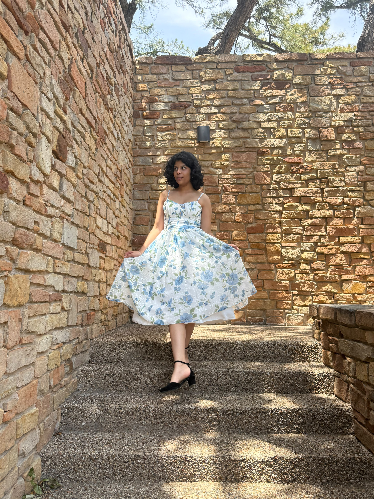
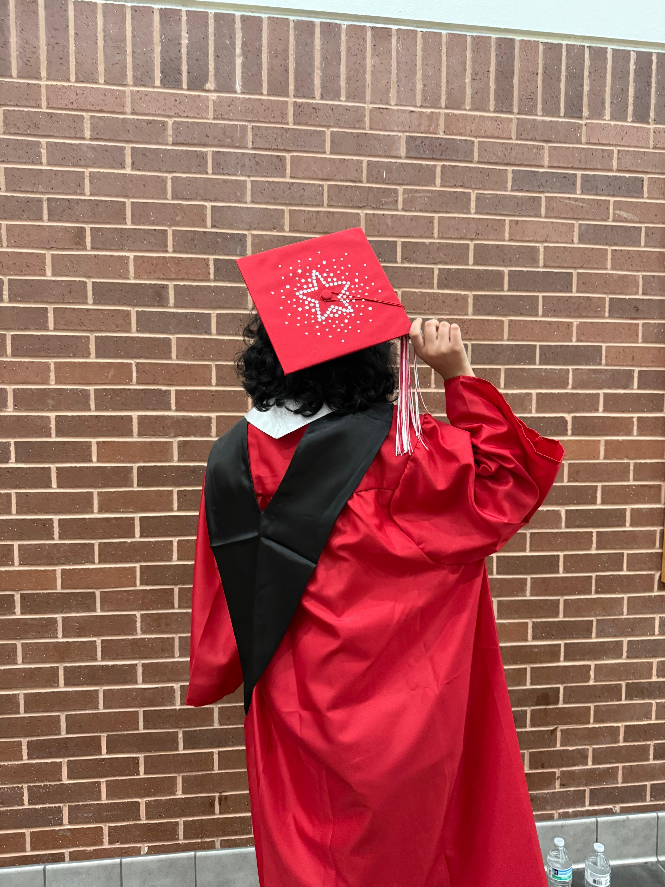
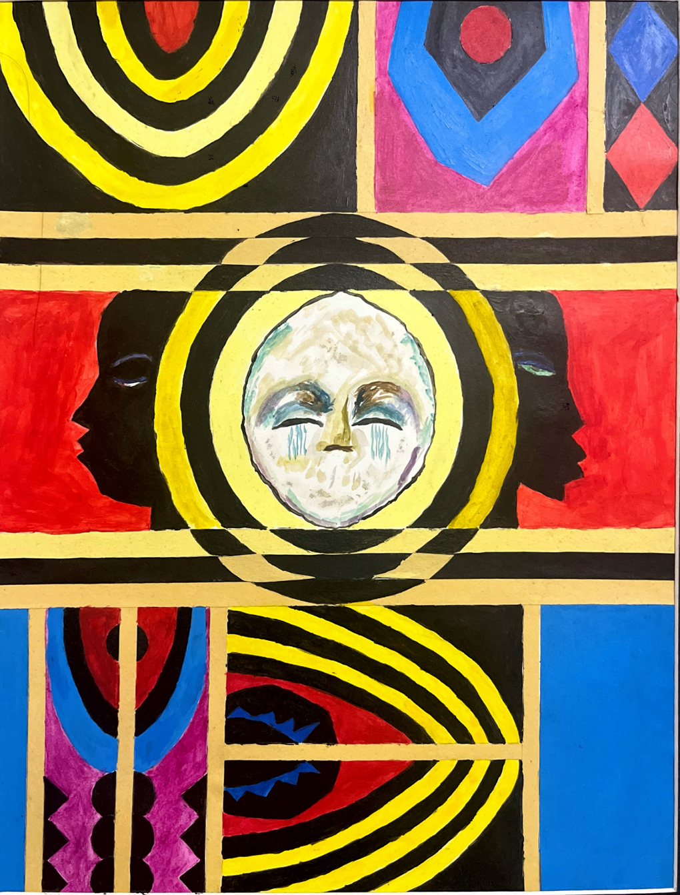
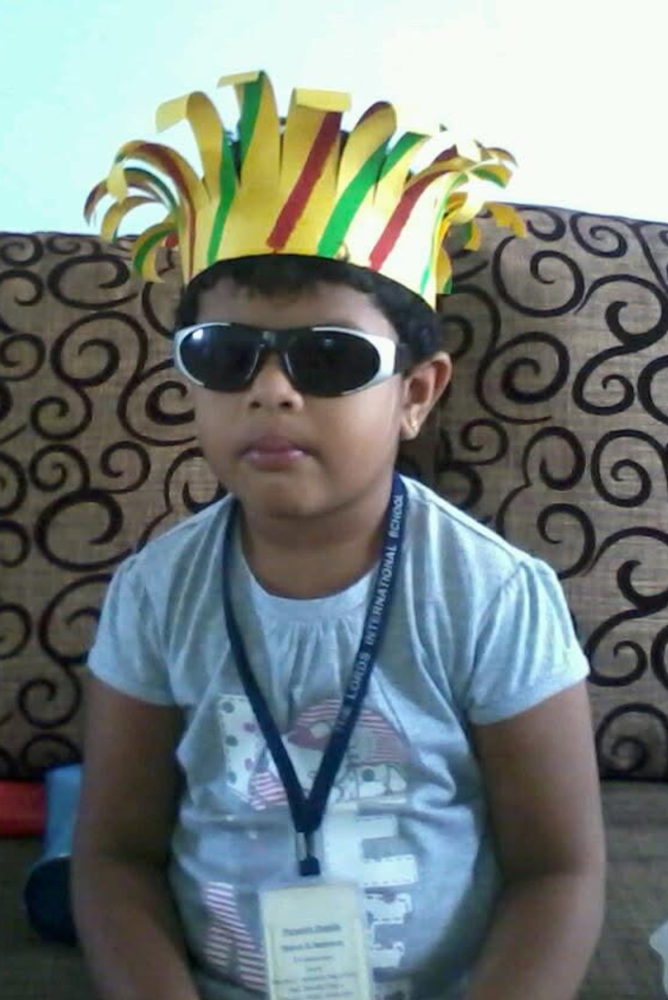
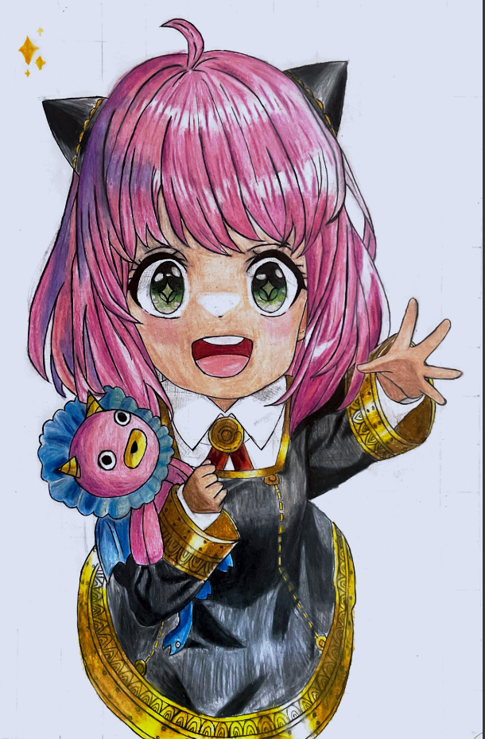
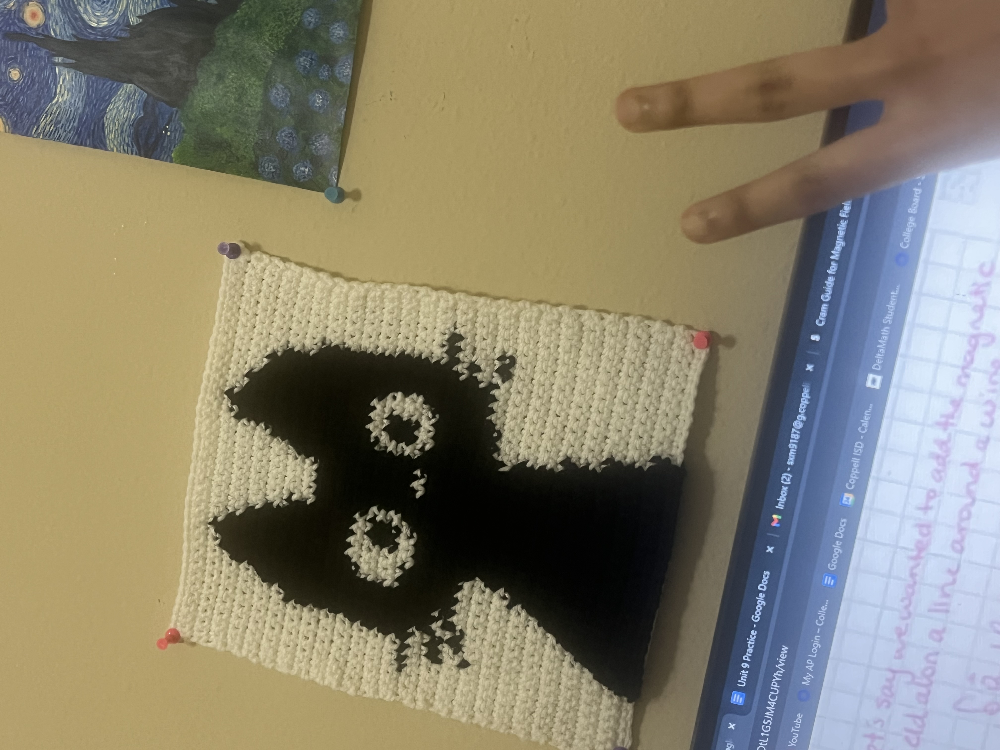
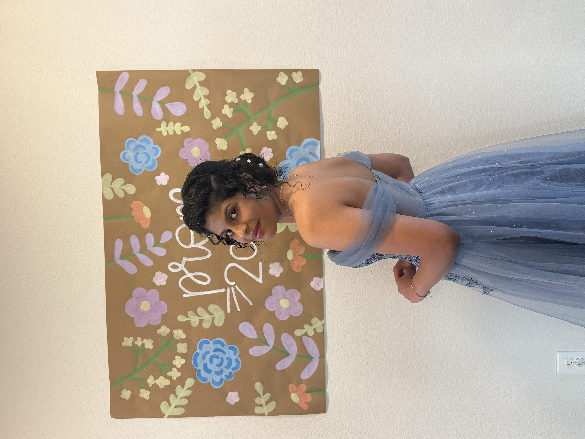
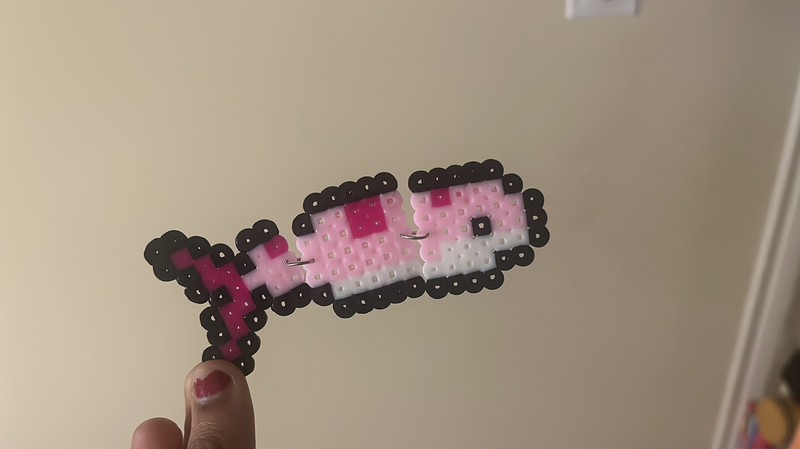
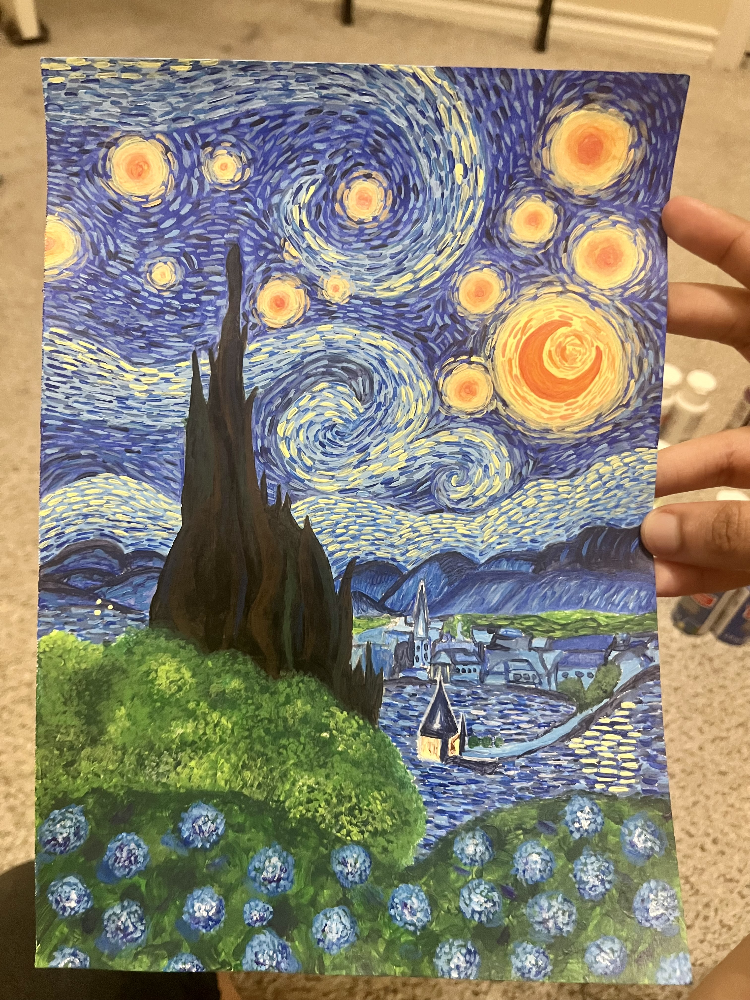
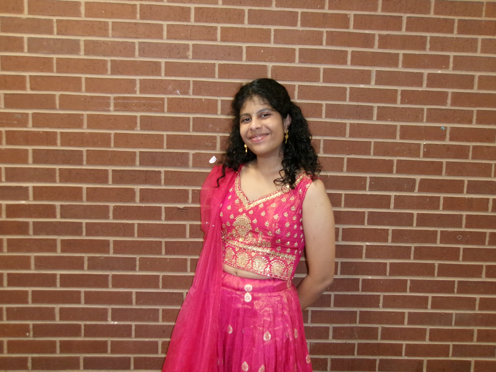
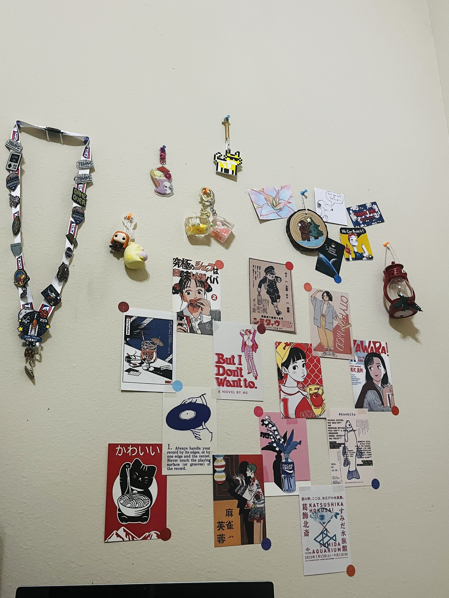